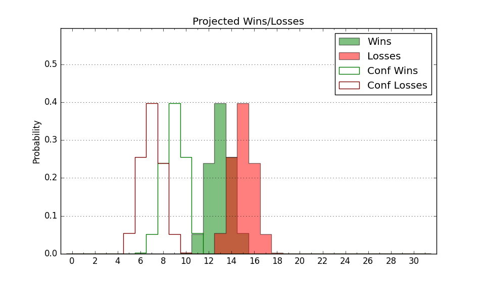

| Home | Game Probabilities | Conferences | Preseason Predictions | Odds Charts | NCAA Tournament |
| City: | Radford, Virginia | |
| Conference: | Big South (3rd)
| |
| Record: | 6-5 (Conf) 10-13 (Overall) | |
| Ratings: | Comp.: -7.5 (241st) Net: -7.5 (243rd) Off: 105.6 (223rd) Def: 113.1 (252nd) SoR: 0.0 (105th) |
| Remaining | ||||||
|---|---|---|---|---|---|---|
| Date | Opponent | Win Prob | Pred. | |||
| 2/14 | Charleston Southern (233) | 63.2% | W 85-81 | |||
| 2/19 | Gardner Webb (363) | 95.3% | W 93-70 | |||
| 2/21 | @ UNC Asheville (218) | 29.1% | L 73-79 | |||
| 2/26 | USC Upstate (275) | 71.6% | W 81-74 | |||
| 2/28 | @ Longwood (270) | 41.4% | L 78-80 | |||
| Previous | Game Score | |||||
| Date | Opponent | Win Prob | Result | Off | Def | Net |
| 11/3 | Western Illinois (361) | 93.8% | W 80-75 | 12.1 | -19.5 | -7.4 |
| 11/11 | @North Carolina (27) | 1.9% | L 74-89 | -5.0 | 26.3 | 21.3 |
| 11/15 | (N) Wright St. (141) | 26.7% | L 59-92 | -23.9 | -5.5 | -29.4 |
| 11/16 | (N) Cleveland St. (298) | 64.7% | L 82-87 | -17.9 | 4.3 | -13.6 |
| 11/18 | @South Carolina (106) | 11.8% | L 58-87 | -16.5 | -3.5 | -20.0 |
| 11/21 | UNC Wilmington (120) | 34.8% | L 73-81 | -8.3 | 2.0 | -6.2 |
| 11/24 | @SMU (32) | 2.3% | L 72-89 | -5.7 | 18.5 | 12.9 |
| 12/3 | Southern Miss (236) | 63.5% | L 75-82 | -8.8 | -6.0 | -14.8 |
| 12/7 | St. Francis PA (354) | 90.8% | W 89-56 | 5.7 | 15.7 | 21.4 |
| 12/14 | Coppin St. (364) | 97.1% | W 107-77 | 13.1 | -6.5 | 6.5 |
| 12/18 | @William & Mary (125) | 14.3% | L 83-96 | 2.0 | -3.1 | -1.1 |
| 12/21 | VMI (356) | 92.0% | W 97-90 | 14.1 | -24.2 | -10.1 |
| 12/31 | @USC Upstate (275) | 42.5% | W 76-69 | -0.5 | 12.5 | 12.0 |
| 1/7 | Presbyterian (264) | 69.6% | W 80-61 | 18.6 | 3.9 | 22.5 |
| 1/10 | UNC Asheville (218) | 58.3% | L 72-91 | -8.6 | -16.9 | -25.5 |
| 1/14 | @Gardner Webb (363) | 85.6% | W 89-80 | 9.8 | -15.5 | -5.7 |
| 1/17 | Longwood (270) | 70.6% | W 85-83 | 10.0 | -19.0 | -9.0 |
| 1/21 | @Winthrop (130) | 14.8% | L 75-76 | 6.1 | 8.2 | 14.3 |
| 1/23 | High Point (85) | 24.1% | L 83-93 | 3.3 | -12.8 | -9.5 |
| 1/29 | @Charleston Southern (233) | 33.5% | W 84-75 | 6.4 | 16.6 | 23.0 |
| 1/31 | @Presbyterian (264) | 40.2% | W 93-84 | 7.5 | 6.9 | 14.4 |
| 2/4 | Winthrop (130) | 37.2% | L 78-80 | 1.2 | 2.5 | 3.7 |
| 2/7 | @High Point (85) | 8.5% | L 77-86 | -3.0 | 15.5 | 12.5 |
| Stats & Trends | |||||
|---|---|---|---|---|---|
| Current | Day | Week | Month | Season | |
| Composite | -7.5 | +0.4 | +0.7 | +0.5 | +0.0 |
| Comp Rank | 241 | +3 | +4 | +4 | -21 |
| Net Efficiency | -7.5 | +0.4 | +0.8 | +0.6 | -- |
| Net Rank | 243 | -- | +4 | -- | -- |
| Off Efficiency | 105.6 | -0.2 | -0.3 | +0.8 | -- |
| Off Rank | 223 | -1 | -3 | -4 | -- |
| Def Efficiency | 113.1 | +0.6 | +1.0 | -0.2 | -- |
| Def Rank | 252 | +17 | +25 | +15 | -- |
| SoS Rank | 266 | +22 | +30 | +46 | -- |
| Exp. Wins | 13.0 | -0.0 | -0.4 | +0.2 | -1.4 |
| Exp. Conf Wins | 9.0 | -0.0 | -0.4 | +0.2 | +0.8 |
| Conf Champ Prob | 0.0 | -- | -0.2 | -2.1 | -10.7 |

| Advanced Stats | ||
|---|---|---|
| Stat | Value | Rank |
| Off Eff FG % | 0.495 | 234 |
| Off Ast Ratio | 0.120 | 334 |
| Off ORB% | 0.275 | 256 |
| Off TO Rate | 0.154 | 234 |
| Off FT Ratio | 0.419 | 43 |
| Def Eff FG % | 0.546 | 289 |
| Def Ast Ratio | 0.165 | 305 |
| Def ORB% | 0.317 | 234 |
| Def TO Rate | 0.157 | 111 |
| Def FT Ratio | 0.416 | 309 |